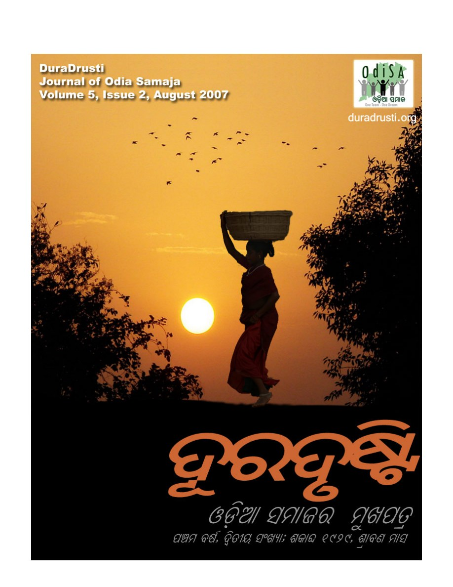

Read this issue page by page · All magazine issues
Restoration links to preserved documents. These are file downloads; the archive has no editing or submission features.
All recovered issue downloads and source notes
